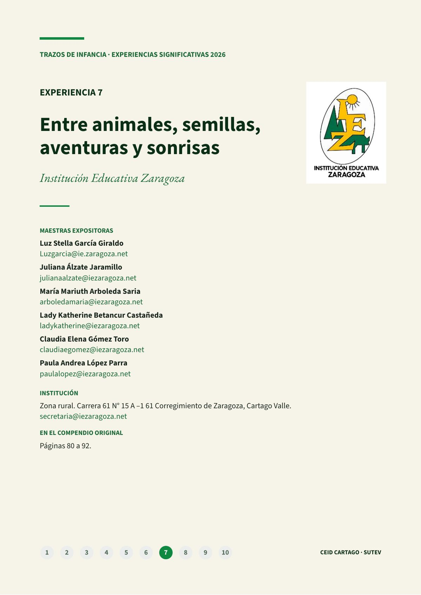
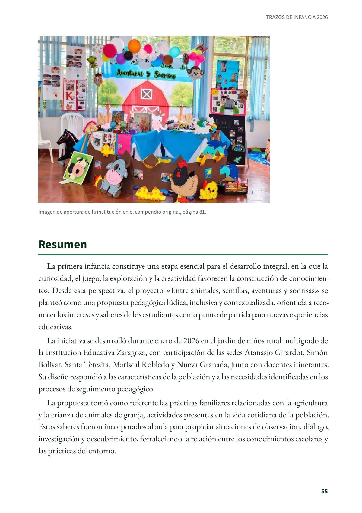
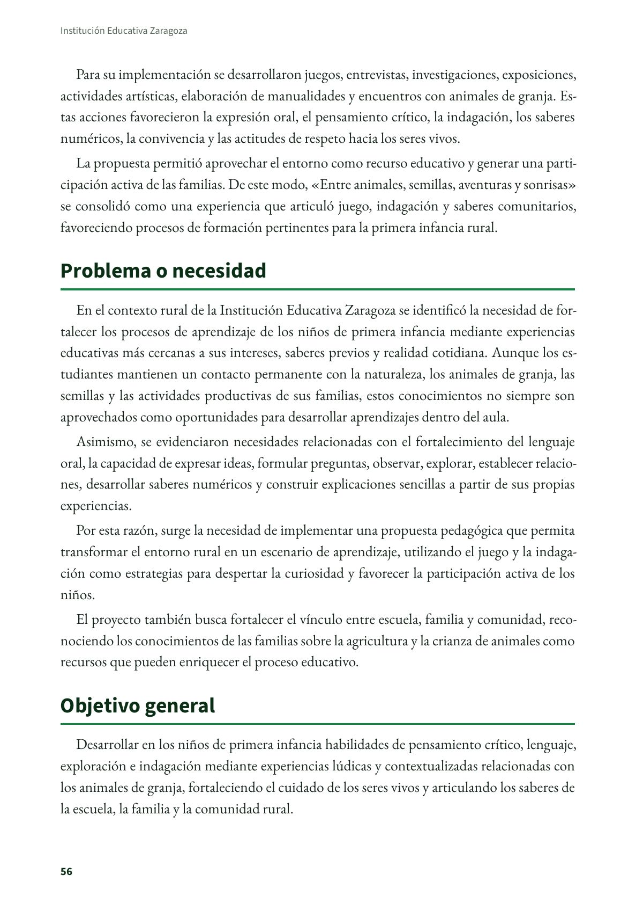
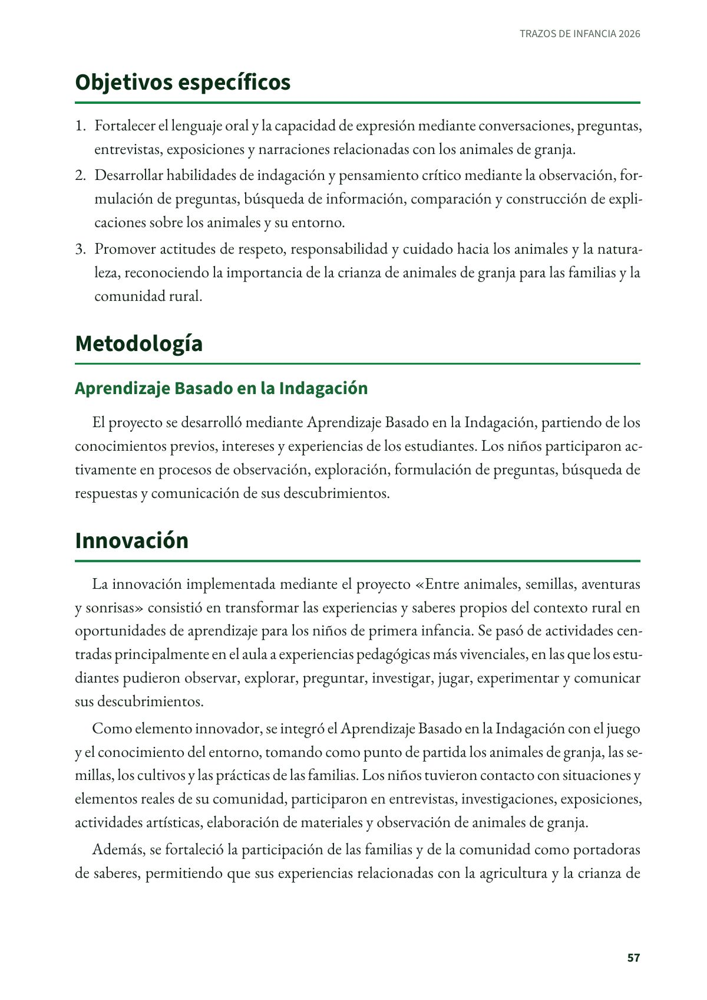
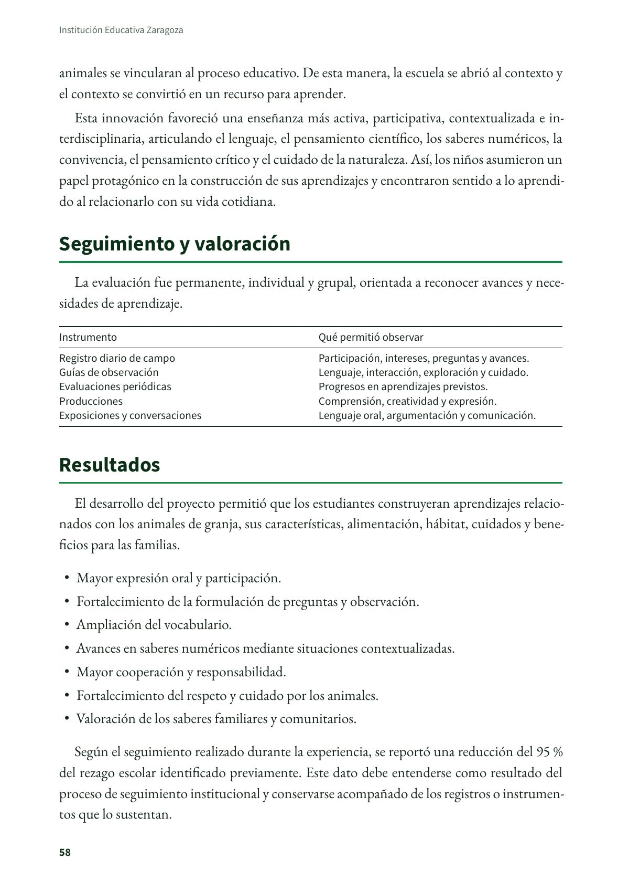
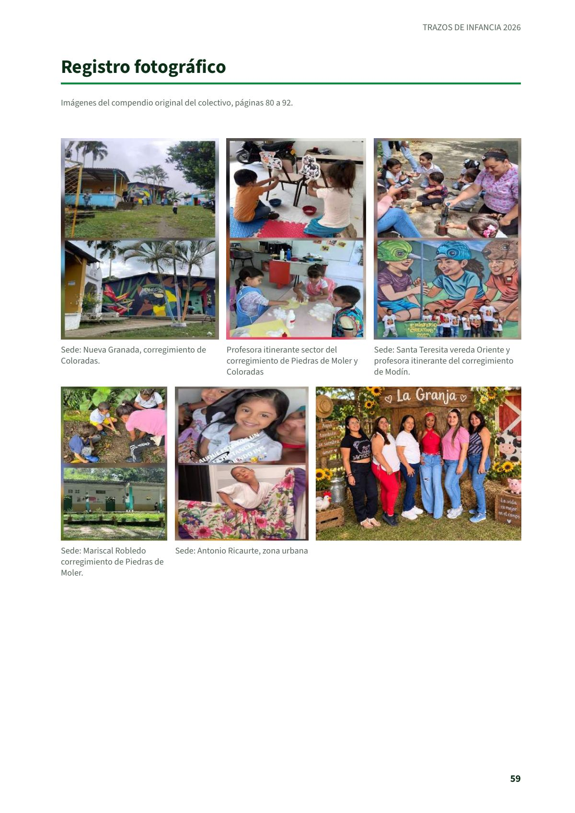

Entre animales, semillas, aventuras y sonrisas
Experiencia significativa en educación inicial de la Institución Educativa Zaragoza, de Cartago, tal como la presentaron sus maestras en el compendio del colectivo Trazos de Infancia.
PDF · 6 págs. · 310 KBResumen
La primera infancia constituye una etapa esencial para el desarrollo integral, en la que la curiosidad, el juego, la exploración y la creatividad favorecen la construcción de conocimientos. Desde esta perspectiva, el proyecto «Entre animales, semillas, aventuras y sonrisas» se planteó como una propuesta pedagógica lúdica, inclusiva y contextualizada, orientada a reconocer los intereses y saberes de los estudiantes como punto de partida para nuevas experiencias educativas.
La iniciativa se desarrolló durante enero de 2026 en el jardín de niños rural multigrado de la Institución Educativa Zaragoza, con participación de las sedes Atanasio Girardot, Simón Bolívar, Santa Teresita, Mariscal Robledo y Nueva Granada, junto con docentes itinerantes. Su diseño respondió a las características de la población y a las necesidades identificadas en los procesos de seguimiento pedagógico.
La propuesta tomó como referente las prácticas familiares relacionadas con la agricultura y la crianza de animales de granja, actividades presentes en la vida cotidiana de la población. Estos saberes fueron incorporados al aula para propiciar situaciones de observación, diálogo, investigación y descubrimiento, fortaleciendo la relación entre los conocimientos escolares y las prácticas del entorno.
Para su implementación se desarrollaron juegos, entrevistas, investigaciones, exposiciones, actividades artísticas, elaboración de manualidades y encuentros con animales de granja. Estas acciones favorecieron la expresión oral, el pensamiento crítico, la indagación, los saberes numéricos, la convivencia y las actitudes de respeto hacia los seres vivos.
La propuesta permitió aprovechar el entorno como recurso educativo y generar una participación activa de las familias. De este modo, «Entre animales, semillas, aventuras y sonrisas» se consolidó como una experiencia que articuló juego, indagación y saberes comunitarios, favoreciendo procesos de formación pertinentes para la primera infancia rural.
Problema o necesidad
En el contexto rural de la Institución Educativa Zaragoza se identificó la necesidad de fortalecer los procesos de aprendizaje de los niños de primera infancia mediante experiencias educativas más cercanas a sus intereses, saberes previos y realidad cotidiana. Aunque los estudiantes mantienen un contacto permanente con la naturaleza, los animales de granja, las semillas y las actividades productivas de sus familias, estos conocimientos no siempre son aprovechados como oportunidades para desarrollar aprendizajes dentro del aula.
Asimismo, se evidenciaron necesidades relacionadas con el fortalecimiento del lenguaje oral, la capacidad de expresar ideas, formular preguntas, observar, explorar, establecer relaciones, desarrollar saberes numéricos y construir explicaciones sencillas a partir de sus propias experiencias.
Por esta razón, surge la necesidad de implementar una propuesta pedagógica que permita transformar el entorno rural en un escenario de aprendizaje, utilizando el juego y la indagación como estrategias para despertar la curiosidad y favorecer la participación activa de los niños.
El proyecto también busca fortalecer el vínculo entre escuela, familia y comunidad, reconociendo los conocimientos de las familias sobre la agricultura y la crianza de animales como recursos que pueden enriquecer el proceso educativo.
Objetivo general
Desarrollar en los niños de primera infancia habilidades de pensamiento crítico, lenguaje, exploración e indagación mediante experiencias lúdicas y contextualizadas relacionadas con los animales de granja, fortaleciendo el cuidado de los seres vivos y articulando los saberes de la escuela, la familia y la comunidad rural.
Objetivos específicos
- Fortalecer el lenguaje oral y la capacidad de expresión mediante conversaciones, preguntas, entrevistas, exposiciones y narraciones relacionadas con los animales de granja.
- Desarrollar habilidades de indagación y pensamiento crítico mediante la observación, formulación de preguntas, búsqueda de información, comparación y construcción de explicaciones sobre los animales y su entorno.
- Promover actitudes de respeto, responsabilidad y cuidado hacia los animales y la naturaleza, reconociendo la importancia de la crianza de animales de granja para las familias y la comunidad rural.
Metodología
Aprendizaje Basado en la Indagación
El proyecto se desarrolló mediante Aprendizaje Basado en la Indagación, partiendo de los conocimientos previos, intereses y experiencias de los estudiantes. Los niños participaron activamente en procesos de observación, exploración, formulación de preguntas, búsqueda de respuestas y comunicación de sus descubrimientos.
Innovación
La innovación implementada mediante el proyecto «Entre animales, semillas, aventuras y sonrisas» consistió en transformar las experiencias y saberes propios del contexto rural en oportunidades de aprendizaje para los niños de primera infancia. Se pasó de actividades centradas principalmente en el aula a experiencias pedagógicas más vivenciales, en las que los estudiantes pudieron observar, explorar, preguntar, investigar, jugar, experimentar y comunicar sus descubrimientos.
Como elemento innovador, se integró el Aprendizaje Basado en la Indagación con el juego y el conocimiento del entorno, tomando como punto de partida los animales de granja, las semillas, los cultivos y las prácticas de las familias. Los niños tuvieron contacto con situaciones y elementos reales de su comunidad, participaron en entrevistas, investigaciones, exposiciones, actividades artísticas, elaboración de materiales y observación de animales de granja.
Además, se fortaleció la participación de las familias y de la comunidad como portadoras de saberes, permitiendo que sus experiencias relacionadas con la agricultura y la crianza de animales se vincularan al proceso educativo. De esta manera, la escuela se abrió al contexto y el contexto se convirtió en un recurso para aprender.
Esta innovación favoreció una enseñanza más activa, participativa, contextualizada e interdisciplinaria, articulando el lenguaje, el pensamiento científico, los saberes numéricos, la convivencia, el pensamiento crítico y el cuidado de la naturaleza. Así, los niños asumieron un papel protagónico en la construcción de sus aprendizajes y encontraron sentido a lo aprendido al relacionarlo con su vida cotidiana.
Seguimiento y valoración
La evaluación fue permanente, individual y grupal, orientada a reconocer avances y necesidades de aprendizaje.
- Registro diario de campo: Participación, intereses, preguntas y avances.
- Guías de observación: Lenguaje, interacción, exploración y cuidado.
- Evaluaciones periódicas: Progresos en aprendizajes previstos.
- Producciones: Comprensión, creatividad y expresión.
- Exposiciones y conversaciones: Lenguaje oral, argumentación y comunicación.
Resultados
El desarrollo del proyecto permitió que los estudiantes construyeran aprendizajes relacionados con los animales de granja, sus características, alimentación, hábitat, cuidados y beneficios para las familias.
- Mayor expresión oral y participación.
- Fortalecimiento de la formulación de preguntas y observación.
- Ampliación del vocabulario.
- Avances en saberes numéricos mediante situaciones contextualizadas.
- Mayor cooperación y responsabilidad.
- Fortalecimiento del respeto y cuidado por los animales.
- Valoración de los saberes familiares y comunitarios.
Según el seguimiento realizado durante la experiencia, se reportó una reducción del 95 % del rezago escolar identificado previamente. Este dato debe entenderse como resultado del proceso de seguimiento institucional y conservarse acompañado de los registros o instrumentos que lo sustentan.
Maestras e institución
- Luz Stella García Giraldo: Luzgarcia@ie.zaragoza.net
- Juliana Álzate Jaramillo: julianaalzate@iezaragoza.net
- María Mariuth Arboleda Saria: arboledamaria@iezaragoza.net
- Lady Katherine Betancur Castañeda: ladykatherine@iezaragoza.net
- Claudia Elena Gómez Toro: claudiaegomez@iezaragoza.net
- Paula Andrea López Parra: paulalopez@iezaragoza.net
- Institución: Institución Educativa Zaragoza, zona rural, Carrera 61 N° 15 A –1 61 Corregimiento de Zaragoza, Cartago Valle. secretaria@iezaragoza.net
Así se ve en el libro
6 páginas




